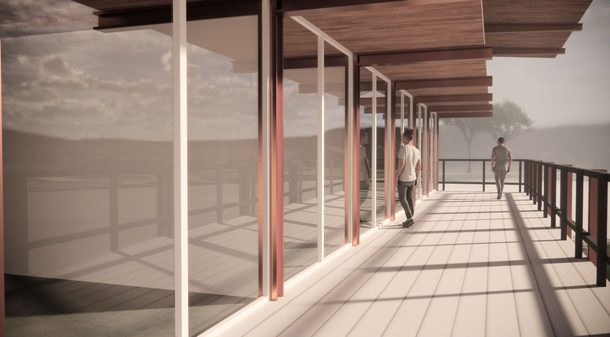
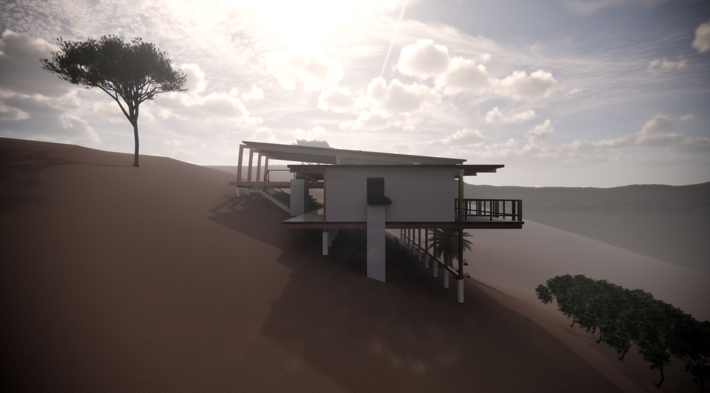
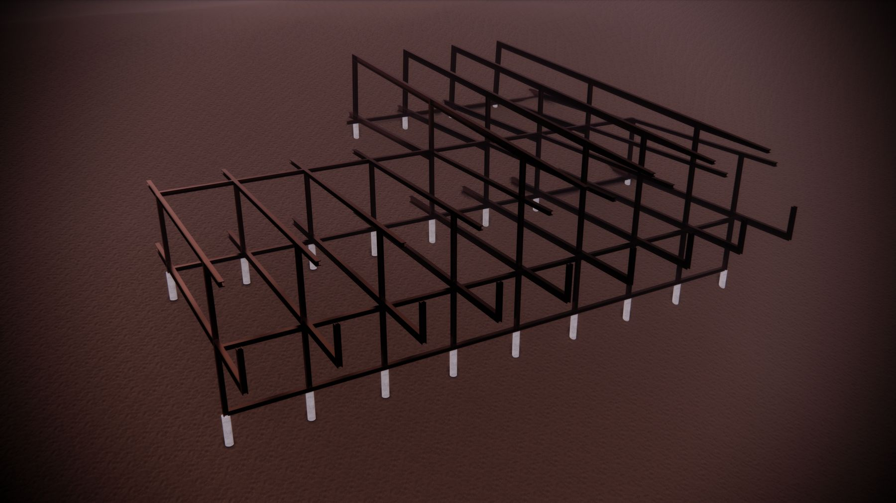
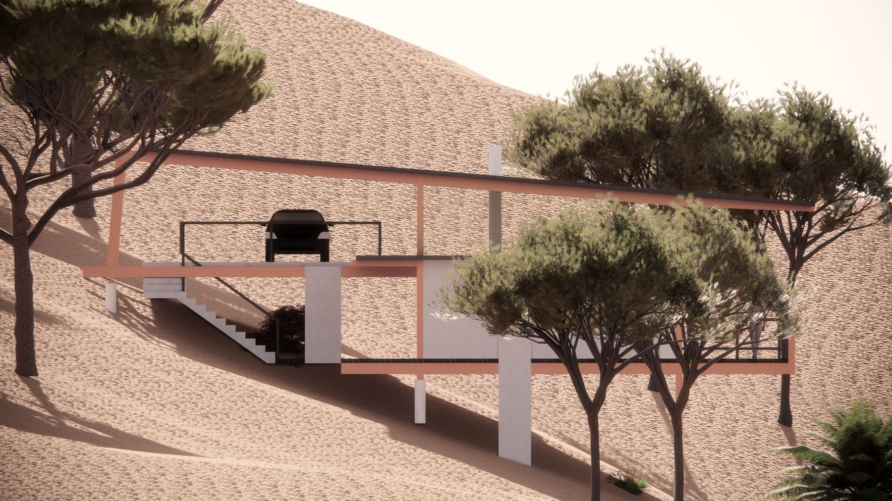
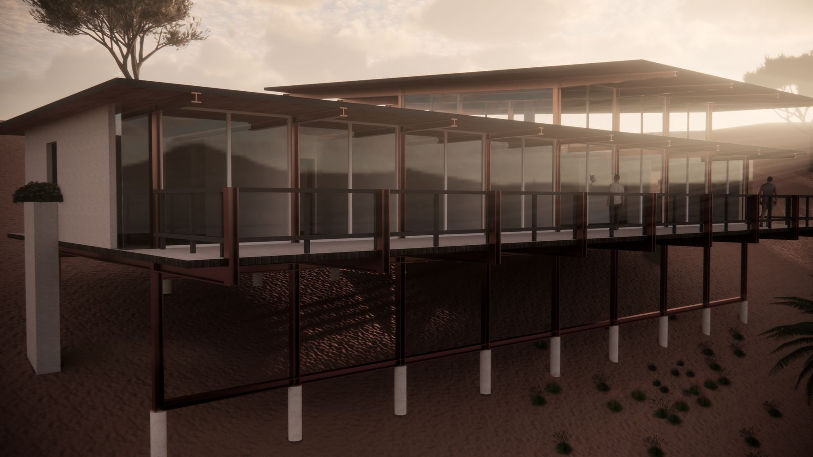
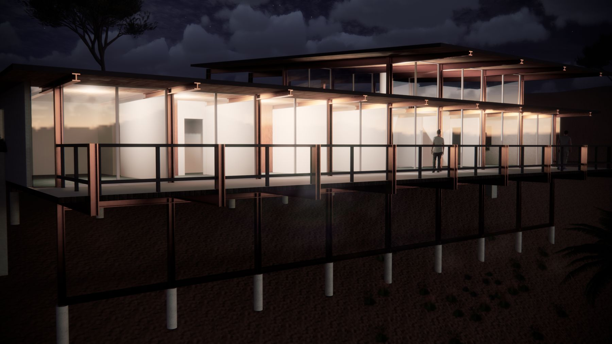
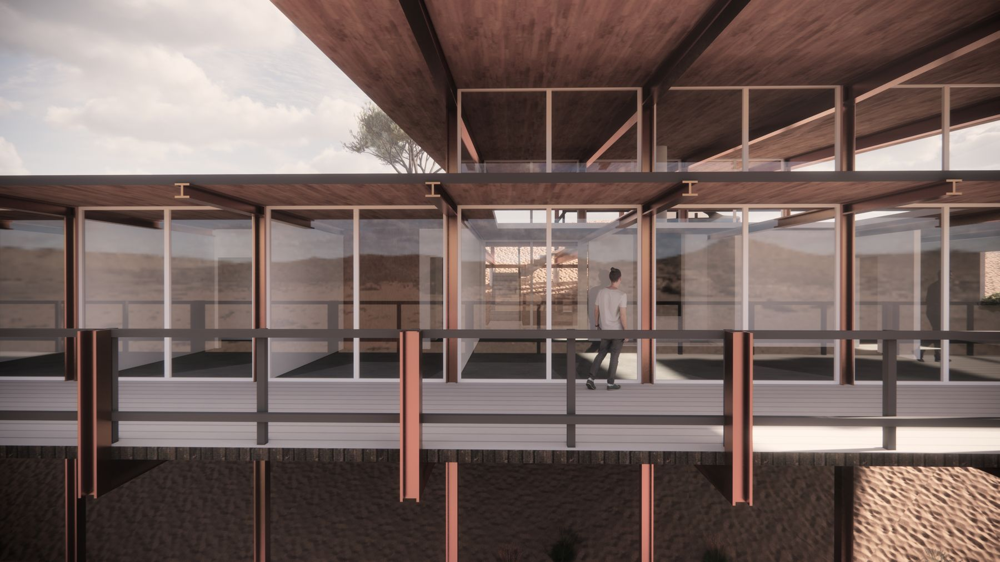
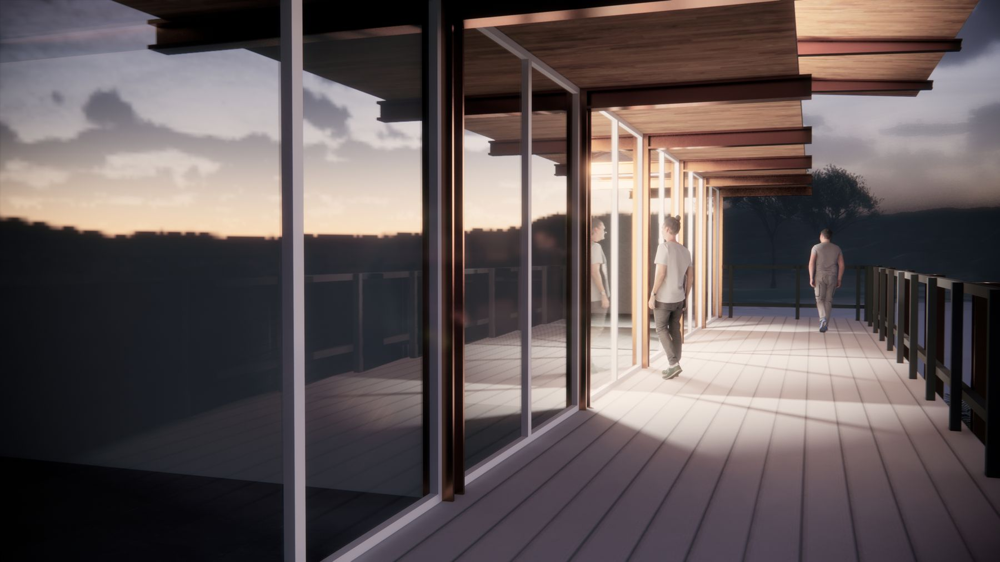
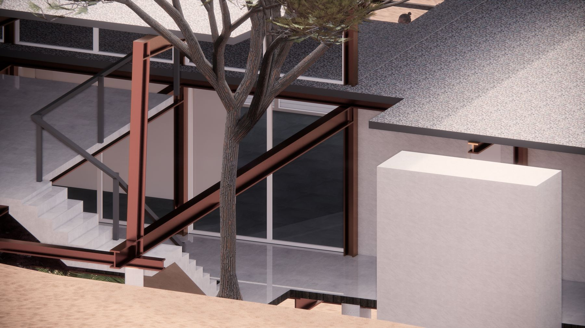
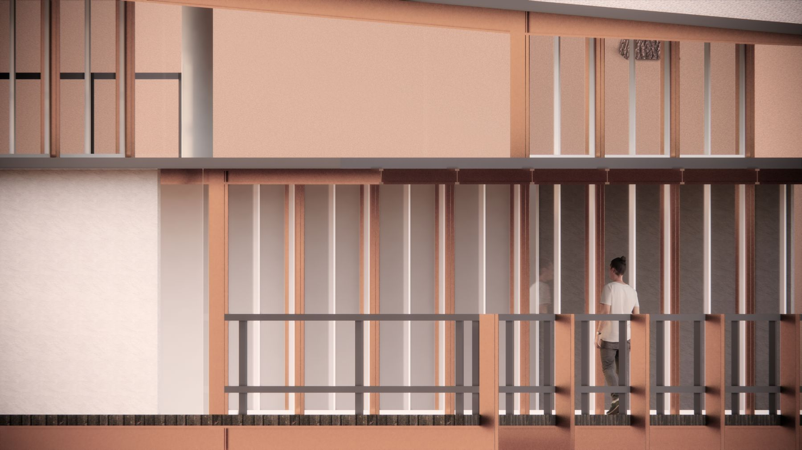

Study, 2023. Visual Communications II, Algonquin College
Ostinato in Architecture
Rhythm and repetition in Case Study House #26, read through the form of a jazz tune.
“Architecture is frozen music.” Johann Wolfgang von Goethe, in conversation with Johann Peter Eckermann, 23 March 1829. Goethe’s words are erstarrte Musik, usually translated as “frozen music”.
Software and media
- 3D model
- SketchUp
- Renders
- Enscape, for every still on this page
- Night walkthrough
- SketchUp model, rendered in Enscape
- Aerial, plan and elevation video
- SketchUp
- Floor plan and diagrams
- Drawn by Claude (AI), traced from the published plan

If architecture is frozen music, then music is liquid architecture, and a building and a tune should be able to be read against each other. This study tests that on one house and one piece of music. They are examples, not the only ones. Each was chosen because it shows the idea plainly.
Ostinato: a musical motif or phrase that persistently repeats in the same musical voice, frequently at the same pitch.
The House and the Tune
Case Study House No. 26 was published in Arts & Architecture in October 1962 and, as built, in January 1963. It stands on a hillside in San Rafael, California, was built by Twentieth Century Homes with Bethlehem Steel, and was designed by Beverley Thorne. He also designed two houses for the jazz pianist Dave Brubeck: one in Oakland, California (completed 1954) and one in Wilton, Connecticut (around 1960). That link to Brubeck is why the tune is Take Five, written by Paul Desmond and recorded by the Dave Brubeck Quartet. It is a famous example of jazz form, built over a repeating two-chord figure in 5/4.


Structure: The Grid as the Ostinato
In music, a bar divides time into equal units. In this house the structure divides space the same way. The magazine describes nine identical rigid steel frames, spaced at 10′-0″ except the two end bays, which are 1½″ wider. Nine frames make eight bays. The modules repeat like bars. What each one holds does not have to repeat, because each takes the use the programme needs. That is the idea in miniature: the repeating grid is the ostinato, and the varying uses are the improvisation over it.

Eight Bays, Eight Bars
Press play to hear the figure (three beats of E♭ minor, two of B♭ minor 7), one bar for each bay in turn. A rough synthesis, not the recording. Floor plan drawn by Claude (AI), traced and simplified from the plan published in Arts & Architecture, 1962–63, with room numbers from its legend. Doors are drawn in bronze: the entry is a sliding door into the foyer (6), a second slider serves bay 4, and a swing door opens to the lower deck. The stair comes down from the carport in bay 4, and the closet beside the lower deck is mechanical. The frames continue into the carport as beams down to their piers; the dotted car is a 16-foot outline for scale. The glazing is drawn as read from the construction plan: a glazed unit in every bay along the deck wall (typically 8′-0″ wide by 9′-6½″ high, narrower in bay 2) and one at the breakfast room on the porch side; positions are approximate. Interior doors are drawn swinging into the room they serve; their positions are approximate. The operable windows over planters at each end are drawn in outline. The carport (15), at the upper level, is drawn as printed, with its piers. Bay assignments are read from the printed plan. The drawing is scaled from the bay width (10′-0″) and traced by eye, so it is proportional but approximate, not a measured drawing. The car is a 16-foot outline at that scale; the stair run and the carport edges are estimates.
Read this way, the plan has two halves. The four bays on the right each hold one bedroom and one service room, the same unit four times. The four on the left each hold something different: family room and kitchen, dining and breakfast rooms, living room and foyer, then living room again.

Form: Head, Solos, Head
A jazz performance opens with the head, the tune as written. Players then take solos, improvising over the same structure. The performance closes with the head again. The head of Take Five is itself in ABA form: a theme (A), a contrasting section (B), then A returns.
The house reads the same way. Its two ends are similar, and the middle changes with the use of each module, as the floor plan shows. A tune is heard in time and a house is read in space, so the link between them is movement: walking the house from one end to the other plays it like a form. That is what the walkthrough above does.


One Pass, Two Forms
Schematic. Section lengths are not to scale, and the house row stands for the left and right elevations as read from the model.
Views Along the Deck




Why It Matters to Me
I trained as a jazz pianist before I trained in architecture, and this study is where the two met. It asks how a designer might use the tools of rhythm and form, repetition and variation, to organise space.
Thematic material is also simply pleasing, to the ear and to the eye. A motif that returns is a pleasure to hear, and a rhythm of frames, beams and shadows is a pleasure to look at. That shared pleasure is part of why music and architecture feel so close to me.
Sources
- All About Jazz. “Beverley Thorne (1924–2017).” Accessed October 14, 2026.Source for both Brubeck houses.
- Arts & Architecture. “Case Study House No. 26 by David Thorne, Architect.” October 1962, and the completed house, January 1963. Excerpts on Case Study House #26 (PDF), hosted by the current owners of the house through casestudyhouse.com. Accessed October 14, 2026.The primary source for the house. Pages from both issues are not reproduced here for copyright reasons.
- Case Study House 26. casestudyhouse.com. Accessed October 14, 2026.
- Dave Brubeck Quartet. “Take Five.” Video on YouTube. Accessed October 14, 2026. youtube.com/watch?v=tT9Eh8wNMkw.The upload is not from the artist’s own channel. The official upload is on Dave Brubeck’s VEVO channel.
- Desmond, Paul. “Take Five.” In The Real Book, 420. Hal Leonard, 2007.
- Docomomo US Northern California. “Beverley D. Thorne.” Accessed October 14, 2026.Source for the Oakland Brubeck house and the spelling of the architect’s name.
- Eckermann, Johann Peter. Gespräche mit Goethe. Entry of March 23, 1829. Projekt Gutenberg-DE. Accessed October 14, 2026.Source of the quotation, in German.
- House & Home. “Three Prototype Designs Test a Rich Market.” April 1963, 98–105. PDF, USModernist Library. Accessed October 14, 2026.The house is the third example in the article, on pages 104–5.